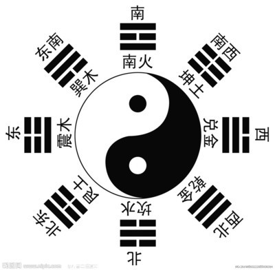

陰陽魚
 易有太極
易有太極
(
天地之初萬物之始 混元之氣
)
是生兩儀
(
混元流動 一分為2
陽氣清輕上升為天

(以3為天數)(以奇數為陽數)
陰氣濁重下降為地

(以2為地數)(以奇數為陰數)
[天地之和為變化無窮 故以35(3+2)為天地之玄機]
)
兩儀生四象
(
元氣流動 以致純陽 為一象

純陽轉陰 陽消陰長 為一象

元氣流動 以致純陰 為一象

純陰轉陽 陰消陽長 為一象

故曰否極泰來
)
四象生八卦

(
以三爻佔據 三才 以成八卦
故有 天道 人道 地道
)
兼三才而兩之 故六
(
以八卦重疊 取二為一 以成六十四卦
)